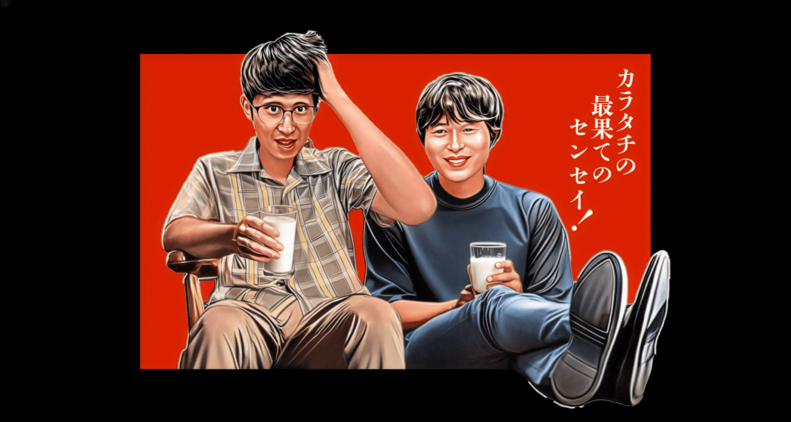

カラタチの最果てのセンセイ！

TBSポッドキャスト「カラタチの最果てのセンセイ！」をさらに楽しむためのページ
CONTENTS
ABOUT
吉本興業所属「カラタチ」 アイドルオタクの前田壮太 × エロゲオタクの大山和也 推しへの愛に遠慮はいらないッ！ 木曜夜、各種ポッドキャストで最新回を配信！

TBSポッドキャスト「カラタチの最果てのセンセイ！」をさらに楽しむためのページ
吉本興業所属「カラタチ」 アイドルオタクの前田壮太 × エロゲオタクの大山和也 推しへの愛に遠慮はいらないッ！ 木曜夜、各種ポッドキャストで最新回を配信！